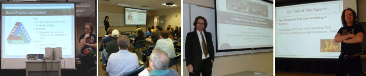

The following lists my
refereed and invited talks at academic conferences, workshops,
seminars, and colloquia.
I've given 117 talks on 62 different subjects since 1983.
2019
"Whither Gamification?",
Invited Talk, The Fourth Annual US-China Smart Education Conference
(Transforming Education through Intelligent Technologies),
University of North Texas,
March 2019.
2018
"The Unexpected Beauty of Modular Bivariate Quadratic Functions",
Dept. of Computer Science, University of Warwick, England, June 2018.
2016
"Generating Realistic Terrain for Video Games using Digital Geography",
Licenciatura en Multimedia y Animacion Digital, Universidad Autonoma de Nuevo Leon,
Monterrey, Mexico, October 2016.
2014
"Generating Realistic Terrain for Video Games using Digital Geography",
Dept. of Computer Science, University of Warwick, England, June 2014.
2013
-
"Real-time Rendering of Melting Objects in Video Games",
18th International Conference on Computer Games,
Louisville, Kentucky, USA, July 2013.
-
"Real-time Rendering of Burning Solid Objects in Video Games",
18th International Conference on Computer Games,
Louisville, Kentucky, USA, July 2013.
-
"What Does the Art and Science of Video Game Development
Bring to Computer Science Education?",
Dept. of Computer Science, Lamar University, April 2013.
-
"Three Topics in Procedural Content Generation",
Dept. of Computer Science, Lamar University, April 2013.
2012
"What Does Computer Science Bring to the Art and Science of Video Game Development?",
Sid Meier's Game Design Boot Camp, University of Michigan, May 2012.
2011
-
"Fast, Believable Real-time Rendering of Burning Low-Polygon Objects in Video Games",
6th Annual North American Conference on AI and Simulation in Games (GAMEON-NA), Troy, NY,
September 2011.
[More Information]
-
"Procedural Generation of Sokoban Levels",
6th Annual North American Conference on AI and Simulation in Games (GAMEON-NA), Troy, NY,
September 2011.
[More Information]
-
"What Does the Art and Science of Procedural Content Generation Bring to Game Design? (And Vice-Versa)",
Panel Session
"Should Procedural Content Generation Change Game Design or Game Design Change Procedural Content Generation?"
at the
Second International Workshop on Procedural Content Generation in Games, Bordeaux, France, June 2011.
-
"A Prototype Quest Generator Based on a Structural Analysis of Quests from Four MMORPGs",
Second International Workshop on Procedural Content Generation in Games, Bordeaux, France, June 2011.
[More Information]
-
"What Does the Art and Science of Video Game Development Bring to Computer Science Education and Research?",
Dept. of Computer Science, Baylor University,
February 2011.
2010
-
"UNT LARC: Research and Education in Game Programming",
National Gaming Day 2010, Willis Library, University of North Texas,
November 2010.
-
"Audio Games",
Invited Talk,
Games Accessibility Day,
6th Annual Games for Health Conference,
Boston, MA, May 2010.
2009
"Education and Research in Game Programming at UNT's Laboratory for Recreational Computing",
Invited Talk,
IEEE MetroCon 2009,
Arlington, TX, August 2009.
2008
"Research and Education in Game Development at UNT LARC",
Dept. of Computer Science, University of Houston,
Houston, TX, April 2008.
2007
-
"Two Topics in Game Development",
Dept. of Information Technology, Rochester Institiute of Technology,
Rochester, NY, April 2007.
-
"SAGE: A Simple Academic Game Engine",
Second Annual
Microsoft Academic Days on Game Development in Computer Science Education.
February 2007.
2006
-
"SAGE: A Simple Academic Game Engine",
-
Dept. of Computer Science, University of Louisiana at Lafayette, Lafayette, LA,
June 2006.
-
Invited Talk,
Microsoft Research Asia Theme Workshop, Beijing, China, Mar. 2006.
-
Invited Talk,
Microsoft Academic Days Conference on Enhancing Computer Science with Gaming Concepts
and Technologies, Cozumel, Mexico, Jan. 2006.
-
"The Art and Science of Game Programming",
-
Dept. of Computer Science, University of North Carolina at Charlotte,
Charlotte, NC, Mar. 2006.
-
2006 ACM Technical Symposium on Computer Science Education,
Houston, TX, Mar. 2006.
-
"Experience With an Industry-Driven Capstone Course on Game Programming",
Dept. of Computer Science, Purdue Univ., West Lafayette, IN, Jan. 2006.
-
"Three Research Topics in Entertainment Computing",
Dept. of Computer Science, Purdue Univ., West Lafayette, IN, Jan. 2006.
2005
-
"Experience With an Industry-Driven Capstone Course on Game Programming",
-
ACET 2005, Fort Worth, TX, Oct. 2005.
-
Dept. of Computer Science, Univ. of Arizona, Tucson, AZ, Sept. 2005.
-
Microsoft Faculty Summit 2005, Breakout Session on Game Programming, Redmond, WA, Aug. 2005.
-
Birds-of-a-feather session on game programming education, Microsoft TechEd 2005,
Orlando, FL, June 2005.
-
College of Information and Mathematical Sciences,
Clayton College and State University,
Atlanta, GA, April 2005.
-
2005 ACM Technical Symposium on Computer Science Education,
St. Louis, MO, Feb. 2005.
-
"The Joy of Math for Game Programmers",
College of Information and Mathematical Sciences,
Clayton College and State University,
Atlanta, GA, April 2005.
-
"Three Research Topics in Entertainment Computing",
-
Dept. of Computer Science, Univ. of Arizona, Tucson, AZ, Sept. 2005.
-
Dept. of Computer Science,
University of Denver, Denver CO, March 2005.
2004
-
"Research and Education in Game Programming",
Fort Worth Chapter of the IEEE,
Lockheed Martin, Fort Worth, TX,
Nov. 2004.
-
"3D Math Boot Camp: Part 4",
Dallas Chapter of the International Game Developer's Association,
Southern Methodist University, Aug. 2004.
-
"3D Math Boot Camp: Part 3",
Dallas Chapter of the International Game Developer's Association,
Southern Methodist University, Mar. 2004.
2003
-
"3D Math Boot Camp: Part 2",
Dallas Chapter of the International Game Developer's Association,
Southern Methodist University, Nov. 2003.
-
"3D Math Boot Camp: Part 1",
Dallas Chapter of the International Game Developer's Association,
Southern Methodist University, Sept. 2003.
2000
-
"Game Programming at the University of North Texas: 2000",
Invited Talk,
The Electronic Game Developers Society,
University of Texas at Austin, Nov. 2000.
-
"Algorithms for Touring Knights".
Dept. of Mathematics, Universit'e de Lausanne, Switzerland, Apr. 2000.
1999
-
"The Art and Science of the Computer Game",
Dept. of Computer Science, University of Maryland,
College Park, MD, Oct. 1999.
-
"Algorithms for Touring Knights".
Dept. of Computer Science, University of Maryland,
College Park, MD, Oct. 1999.
1998
-
"The Art and Science of the Computer Game",
-
Dept. of Computer Science, Texas Christian University,
Fort Worth, Texas, Nov. 1998.
-
Dept. of Computer Science, Univ. of Utah,
Salt Lake City, Utah, Sept. 1998.
-
"Training Game Programmers at the University of North Texas",
International Game Developer's Network '98, Plano, Texas, Oct. 1998.
1997
-
"The Art and Science of the Computer Game",
-
Dept. of Computer Science, Univ. of Victoria,
Victoria, BC, Canada, Nov. 1997.
-
Distinguished Lecture Series,
Dept. of Computer Science, Univ. of Alberta,
Alberta, Canada, Sept. 1997.
-
Invited Speaker, Shell Symposium Series in Computer Science,
Univ. of Texas at El Paso, Sept. 1997.
-
"Algorithms for Touring Knights".
Dept. of Computer Science, Univ. of Alberta,
Alberta, Canada, Sept. 1997.
1996
"Are Hopfield Networks Faster Than Conventional Computers?",
9th Conference
on Neural Information Systems -- Natural and Synthetic,
Denver, Colorado, Nov. 1996.
1995
-
"The Complexity of Stability in Hopfield Networks",
Post Meeting Workshop on "Optimization Problem Solving in Neural Networks",
1995 Conference on Neural Information Processing Systems -- Natural
and Synthetic, Vail, Colorado, Dec. 1995.
-
"The Laboratory for Recreational Computing",
Dept. of Computer Sciences,
Univ. of North Texas, October 1995.
-
"The Internet and the Aspiring Games Programmer".
DAGS 95, "Electronic Publishing and the Information Superhighway",
Boston, MA, June 1995.
-
"Algorithms for Touring Knights".
Dept. of Electrical Engineering and Computer Science,
Univ. of Vermont, Burlington, VT, June 1995
-
"The SIGACT Theoretical Computer Science Genealogy: Preliminary Report",
DAGS 95, "Electronic Publishing and the Information Superhighway",
Boston, MA, June 1995.
1994
-
"Algorithms for Touring Knights".
-
Workshop on Algorithmic Research in the Midsouthwest,
Austin, TX, Nov. 1994.
-
Dept. of Computer Science, Johns Hopkins Univ., Baltimore, MD, June 1994.
1993
-
"Algorithms for Touring Knights".
-
Post Meeting Workshop on "Neural Network Methods for Optimization Problems",
1993 Conference on Neural Information Processing Systems -- Natural
and Synthetic, Vail, Colorado, Dec. 1993.
-
DIMACS Workshop on
"Parallel Algorithms: From Solving Combinatorial Problems to Solving
Grand Challenge Problems", Rutgers University, Piscataway,
New Jersey, Nov. 1993.
-
"Knowledge, Understanding, and Computational Complexity".
Dept. of Computer Science, University of Victoria (Canada), April 1993.
1992
-
"On the Complexity of Learning with a Small Number of Nodes".
1992 International Joint
Conference on Neural Networks, Vol. 3, June 1992.
-
"Load Sharing with Parallel Priority Queues".
-
Dept. of Computer Science, Univ. of Maryland, College Park, MD, June 1992.
-
Dept. of Computer Science, Johns Hopkins Univ., Baltimore, MD, June 1992.
-
Dept. of Computer Science, Univ. of Delaware, June 1992.
-
Dept. of Computer Science, Univ. of Maryland Baltimore County,
Baltimore, MD, June 1992.
-
"Knowledge, Understanding, and Computational Complexity".
-
Special Session, How Close are We to Solving the
Learning Problem, and How Can We Do Better?,
1992 International Joint Conference on Neural Networks,
Baltimore, MD, June 1992.
-
Dept. of Computer Science, Univ. of Delaware, June 1992.
-
Air Force Office of Scientific Research, Bolling, DC, June 1992.
-
NEC Research Center, Princeton, NJ, June 1992.
-
24th Annual ACM Symposium on the Theory of Computing, Victoria,
Canada, May 1992 (rump session).
-
Metroplex Institute for Neurodynamics Conference on
Optimality in Biological and Artificial Neural Networks,
Dallas, TX, Feb. 1992.
-
"The Computational Complexity of Optimal Sorting Network Verification".
The Schloss Dagstuhl Seminar on Parallel and Distributed Algorithms,
Germany, Mar. 1992.
1991
-
"Knowledge, Understanding, and Computational Complexity".
-
Neural Network Research Group,
Texas Instruments, Dallas, TX, Dec. 1991.
-
Metroplex Institute for Neurodynamics,
Dallas, TX, Oct. 1991.
-
ACM Student Chapter,
Dept. of Computer Sciences, Univ. of North Texas,
Nov. 1991.
-
Workshop on Complexity Issues in Neural Computation and Learning,
Post Meeting Workshop, IEEE Conference on Neural Information
Processing Systems -- Natural and Synthetic, Vail, Colorado, Dec. 1991.
-
"On the Computational Complexity of Optimal Sorting Network Verification".
-
The Conference on
Parallel Architectures and Languages Europe,
June 1991.
-
Dallas IEEE Computer Society Chapter Meeting,
Southern Methodist Univ., Jan. 1991.
-
"Ragged Heaps, Parallel Priority Queues, and Halving Networks".
-
Dept. of Computer Science, Warwick Univ., Mar. 1991.
-
Programming Research Group, Oxford Univ., Mar. 1991.
-
Schloss Dagstuhl Seminar on Parallel and Distributed Algorithms,
Germany, Mar. 1991.
-
"On the Dynamic Range of Synaptic Weights in a Discrete Neuron Model".
Special Session of The American Mathematical Society Meeting on
Mathematical Issues in Biologically Motivated Computing,
The Univ. of South Florida, Tampa, FL, Mar. 1991.
-
"Some Thoughts on the Role of Theoretical Computer Science in the
Undergraduate Curriculum".
The Computer Science Curriculum Workshop,
MIT, Jan. 1991.
1990
-
"The Computational Complexity of Optimal Sorting Network Verification".
-
Workshop on Algorithm Research in the Midsouthwest,
Dallas, TX, Oct. 1990.
-
Univ. of Tennessee Space Center, Apr. 1990.
-
Dept. of Computer Science, Univ. of North Texas, Apr. 1990.
1989
-
"Limited Precision Analog Neural Networks".
-
Dept. of Computer and Information Science,
Univ. of Delaware, Dec. 1989.
-
Applied Research Laboratory, Penn State Univ., Sept. 1989.
-
"A Computer Assisted
Optimal Depth Lower-bound for Sorting Networks with Nine Inputs".
Supercomputing '89, Reno, Nevada, Nov. 1989.
-
"Improved Upper and Lower Time Bounds for Parallel Random Access Machines
Without Simultaneous Writes",
1989 International Conference on Parallel Processing,
St. Charles, IL, Aug. 1989.
1988
-
"The Complexity of Reliability in Neural Networks".
Dept. of Computer Science, Univ. of Queensland, Dec. 1988.
-
"A Primer on the Complexity Theory of Neural Networks".
Workshop on Complexity Theory of Neural Networks,
Post Meeting Workshop, IEEE Conference on Neural Information
Processing Systems -- Natural and Synthetic, Keystone, Colorado, Dec. 1988.
-
"Computing with Noisy Neurons: An Overview of Classical Techniques".
Workshop on Fault Tolerance,
Post Meeting Workshop, IEEE Conference on Neural Information
Processing Systems -- Natural and Synthetic, Keystone, Colorado, Dec. 1988.
-
"The Complexity of Reliability and Constraint
Satisfaction in Neural Networks",
International Neural Network Society First Annual Meeting,
Boston, MA, Sept. 1988.
1987
-
"Relating Boltzmann Machines to Conventional Models of Computation",
Second International Symposium
on Methodologies for Intelligent Systems,
Charlotte, NC, Oct. 1987.
-
"Boltzmann Machines and Unbounded Fan-in Threshold Circuits".
Dept. of Computer Science, Duke Univ., Feb. 1987.
1986
-
"On the Time Required to Sum n Semigroup Elements on a Parallel Machine
with Simultaneous Writes".
Second International
Workshop on Parallel Computing and VLSI, Attica, Greece,
July 1986.
-
"Parallel Computation with Threshold Functions".
-
Dept. of Computer Science, Edinburgh Univ., June 1986.
-
Dept. of Computer Science, Warwick Univ., June 1986.
-
Dept. of Computer Science, Liverpool Univ., June 1986.
-
Structure in Complexity Theory Conference, Berkeley, California,
June 1986.
1984
-
"Parallel Speedup of Sequential Machines".
-
Coordinated Science Laboratory,
Univ. of Illinois at Urbana-Champaign, Dec. 1984.
-
IBM Research, San Jose, Aug. 1984.
-
Dept. of Computer Science, Univ. of Queensland, Aug. 1984.
-
Center for Research in Computing Technology, Harvard Univ., May 1984.
-
Dept. of Computer Science, Yale Univ., May 1984.
-
Dept. of Electrical Engineering and Computer Science, Princeton Univ.,
May 1984.
-
Dept. of Computer Science, Penn State Univ., May 1984.
-
Dept. of Computer Science, Univ. of Chicago, May 1984.
-
Dept. of Computer and Information Science.
Univ. of Pennsylvania, May 1984.
-
"Some Practical Simulations of Impractical Parallel Computers",
International Workshop on Parallel Computing and VLSI,
Amalfi, Italy, May 1984.
1983
"On the Construction of Parallel Computers from
Various Bases of Boolean Functions".
Dept. of Computer Science, Yale Univ., Jan. 1983.